"¡Hola Mundo!" ..
Soy Nahuel Calcara, desarrollador web y de software.
SOBRE MI
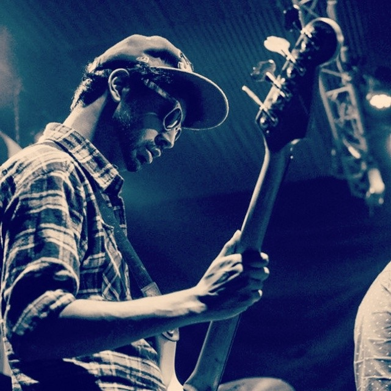
Soy un desarrollador de software apasionado y músico con experiencia en el rubro de la electrónica. Después de trabajar en la industria electrónica durante un tiempo, decidí redirigir mi carrera hacia la programación profesional.
Mi experiencia musical me ha enseñado la importancia de la colaboración y la capacidad de adaptarme a diferentes estilos y géneros, lo cual me ayuda a acoplarme fácilmente a cualquier equipo.
Además, mi interés por el arte y el dibujo me hace extremadamente consciente de los detalles estéticos y busco combinar la funcionalidad con una experiencia visual agradable en mis proyectos.
Como programador, cuento con una sólida formación en desarrollo web y experiencia en desarrollo fullstack. Me enorgullece ofrecer soluciones eficientes y de calidad que cumplan con las necesidades de mis clientes. Siempre estoy buscando aprender y mantenerme actualizado con las últimas tendencias y tecnologías.
Aquí encontrarás una selección de mis trabajos más recientes.
Click en los títulos para ver el contenido.
-
Kiosco es una aplicación para el seguimiento de ingresos en locales de venta al público. Su objetivo es proporcionar una herramienta eficiente para registrar transacciones diarias. Los usuarios pueden ingresar el monto de las ventas realizadas, y tienen la opción de añadir detalles de cada venta si lo desean. La app captura automáticamente el horario exacto de la venta, brindando información precisa.
Una característica destacada es el historial completo de ventas, que permite revisar transacciones pasadas en un calendario. Kiosco también ofrece una sección para cuentas de clientes, donde se registran saldos pendientes.
Asi mismo, la aplicación permite conectar un perfil de Gmail para enviar copias de seguridad diarias de la base de datos al email, brindando la prevención de pérdida de datos.
En resumen, Kiosco es una aplicación eficiente y versátil para la gestión de ingresos en locales de venta al público.
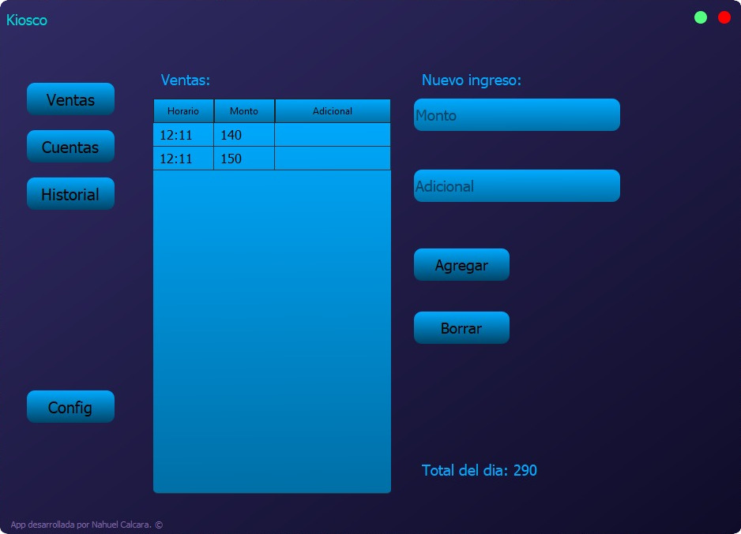
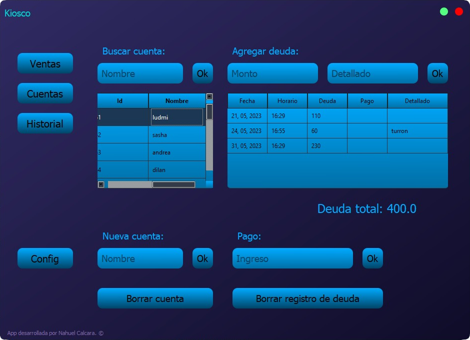
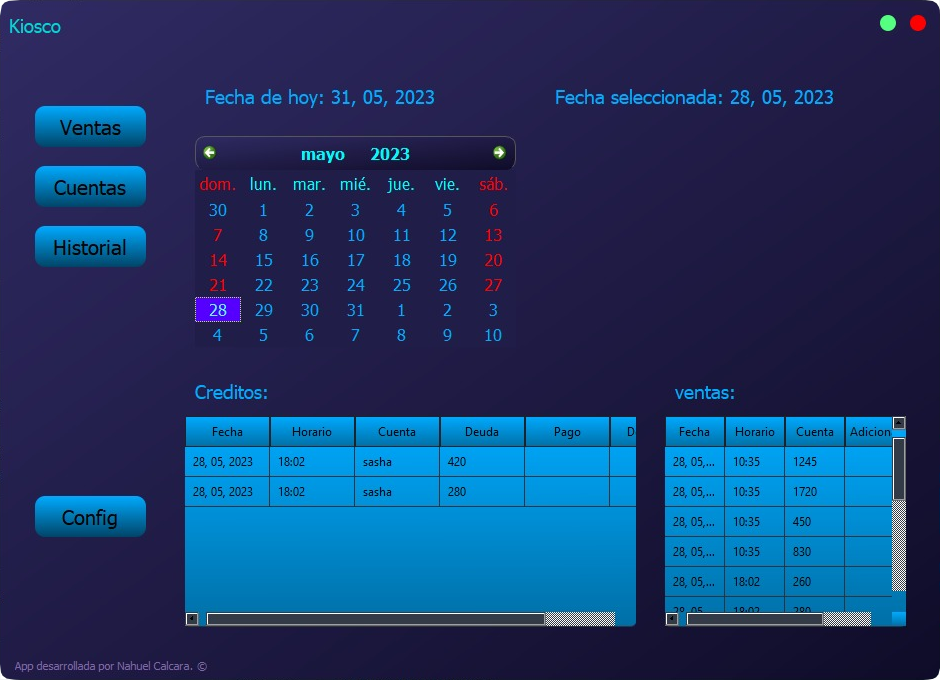
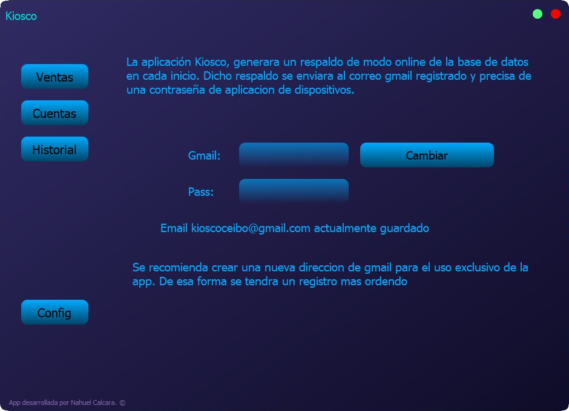
-
Un tilemap es una técnica utilizada en el desarrollo de videojuegos para representar y organizar los elementos gráficos de un nivel o mapa.
Este programa diseñado en Python genera automáticamente tilemaps en estilo pixel art.
Permite dibujar mosaicos de fondo y de detalles en dos lienzos separados, para combinarlos luego. Con unos pocos clics, construye y guarda el tilemap resultante.
La interfaz es simple, pero no pretende ser de uso comercial. Ademas proporciona herramientas como pintado por relleno (donde implemente un algoritmo de grafos BFS, para reconocer a los pixeles vecinos del mismo color.), herramienta de borrar y selector de color por click.
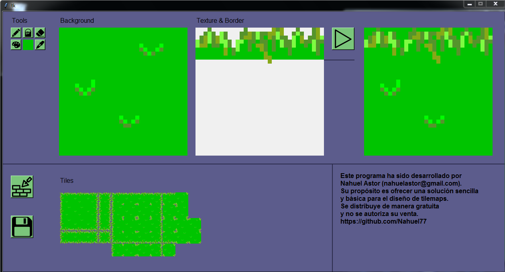
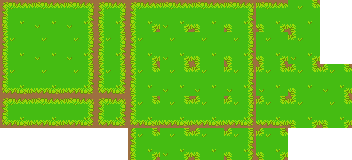
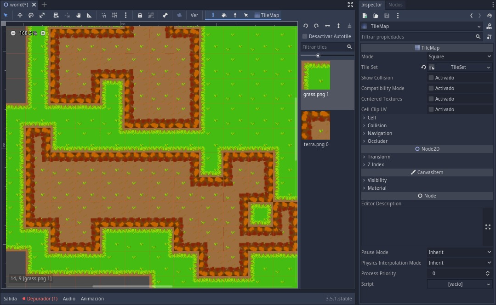
-
Codo a Codo 1 Codo a Codo 2
Durante mi participación en el curso "Codo a Codo", se me asignó la tarea de replicar una página web como trabajo práctico integrador. Como parte de este desafío, he desarrollado una versión propia de la web, aplicando mis conocimientos y habilidades adquiridas en el curso.
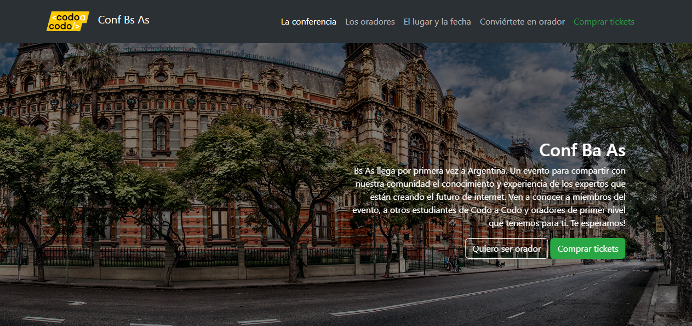
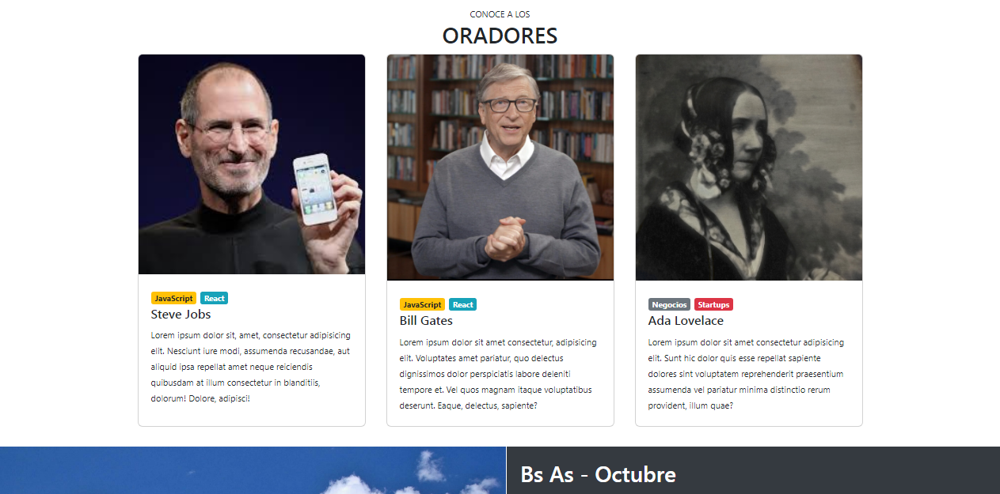
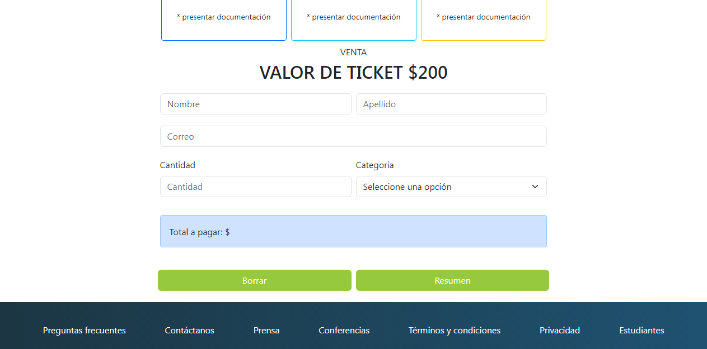
-
CRUD con sistema de usuarios con rutas protegidas. Desarrollado utilizando MERN (MongoDB, Express, React, Node.js). Algunas de las librerías adicionales que utilicé son Vite, Axios y Tailwind, siendo las más relevantes.
* Esta web fue creada usando JavasCript puro. ;)
FORMACIÓN
Inicié mi camino en la programación a los 15 años, explorando lenguajes como Pascal y luego Visual Basic. Durante ese tiempo, tuve la oportunidad de tomar clases en el instituto Hilet para fortalecer mis fundamentos. Sin embargo, gran parte de mi formación ha sido autodidacta, lo cual me ha permitido adquirir habilidades de manera independiente y explorar diversas tecnologías.
Poseo un nivel intermedio en el idioma inglés, aunque mi enfoque principal de mejora se encuentra en la pronunciación. Además, tengo conocimientos intermedios de portugués.
En la actualidad, estoy cursando la carrera de Ingeniería Informática en la Universidad Nacional de Mar del Plata. Paralelamente, formo parte del programa "Codo a Codo", donde estoy cursando el programa de Full Stack con Java. Tengo planes de seguir ampliando mi formación a través de la participación en cursos y programas educativos en el futuro.
No dudes en explorar mi portafolio y descubrir más sobre mi experiencia y habilidades en el mundo de la programación. Si tienes alguna pregunta o necesitas más información, no dudes en contactarme.
Habilidades